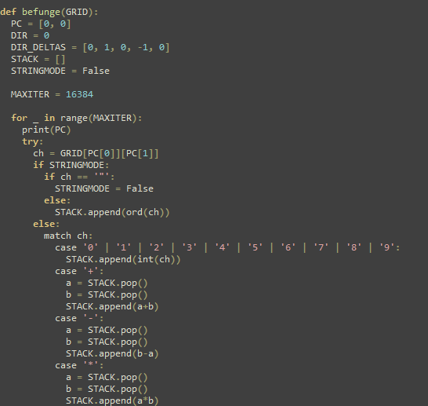
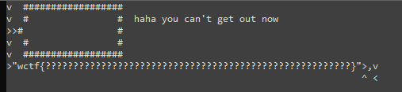

<html style="overflow:scroll">
	<head>
		<link rel="stylesheet" href="/mycss.css">
	</head>
	<body>
		<div class="lighterbar">
			<h1 class="titleText">Jackson Donaldson</h1>
		</div>
		<div class="bar">
			<div class="topnav">
				<a href="/">Home</a>
				<a href="/resume">Resume</a>
				<a href="/tetris3D">Tetris3D</a>
				<a href="/connect4">Connect4</a>
				<a class="active" href="/writeups">Writeups</a>
			</div>
		</div>
		
			
		<div class="back" style="padding-top:15px;">
			<div style="width:840;margin:auto;height:5000;">
				<h1> WolvCTF2023: YellsAtBefunge </h1>
				
				
				<h1> YellsAtBefunge1 </h1>
				<p> There are 3 interesting files given: </p>
				<h3>befunge.py</h3>
				
				<h3>chall.py</h3>
				
				<h3>provided_file.txt</h3>
				
				<p> befunge.py looks to be an interpreter for the esolang <a href = "https://en.wikipedia.org/wiki/Befunge"> Befunge </a>. Chall.py gives
				us the abilty to write to the 3x16 grid enclosed by "#" in 'provided_file.txt'. Looks like the '#' character is a springboard though, moving us multiple tiles. </p>
				
				<div whiteSpace: "pre-wrap">
					<p> That means we just have to walk into the lower left hand wall; we can enter the string<pre>'                v               <'</pre> which maps to the below result and grabs the flag.</p>
				
				
				
				<h1> YellsAtBefunge2 </h1>
				<p> Now the walls actually can't just be walked through; we're going to have to make use of the 'p' opcode, which takes the last 3 values off the stack and write a new character to the grid of instructions;
				the below program writes a springboard to the location where the inner wall should be, letting us jump over it and grab the flag.</p>
				<h3> Program Code </h3>
				
				<h3> After Execution </h3>
				
				<p> Note the '#' Character written to row 4 column 3. This is inputted at <pre>'>        75*34pv^              v<              <' </pre></p>
				
				<h1> YellsAtBefunge3 </h1>
				<p> The 'p' opcode has been disabled; that's alright though; we can use the 'g' opcode to read the contents of the grid at an arbitrary point. The below program loops and increments a value in the stack, printing out that column of row 7. Once it hits column 27, the '|' operator at the end of the bottom line will cause the pointer to go down rather than up, hitting a wall and ending the program (this is actually useless in this case though, as an infinite loop would have extracted the flag just as well.) </p>
				
				<pre>'                v v<<<<<,g7<    >1>1+::93*-|'</pre>
				
				<h1> YellsAtBefunge4 </h1>
				<p> Now the 'g' opcode is disabled, and we get exactly 1 use of the 'p' opcode to extract the flag from the below file </p>
				
				<p> We can do this with a string escape; the " character sends the program into string reading mode, grabbing whatever's in the grid and storing in the stack without executing it until you hit another " character. By placing a " on the outside of the grid with our 1 'p' usage, we can put another one inside and escape. </p>
				
				<pre>                98+2*16v        "<<<<p<<</pre>
				
				
			</div>
		</div>
		
	</body>
</html>